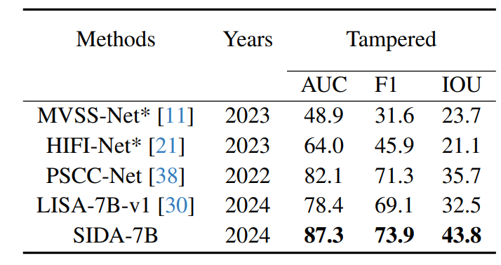
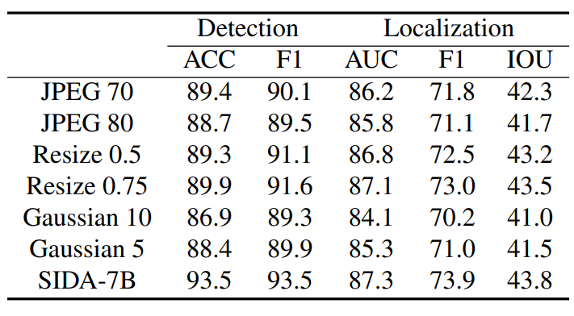

The framework comparisons. Existing deepfake methods (a-b) are limited to detection, localization, or both. In contrast, SIDA (c) offers a more comprehensive solution, capable of handling detection, localization, and explanation tasks.
Comparison with Existing Image Deepfake Datasets
Comparison with existing image deepfake datasets. SID-Set addresses the challenges of limited diversity and outdated generative techniques by providing a more comprehensive set of high-quality and diverse images.
Comparison with Existing Related Works
Comparison with existing related works. An (*) indicates methods that have created their own dataset. SIDA stands out by combining diverse datasets and providing a unified solution for deepfake detection, localization, and interpretation.
Tampered Image Generation Pipeline
Tampered image generation pipeline: It consists of four stages—extracting objects from captions using GPT-4o, obtaining object masks with Language-SAM, setting up replacement dictionaries for generating tampered images, and generating new images using Latent Diffusion. This figure illustrates an example of object replacement (e.g., “cat” to “dog”) and attribute modification
Generated Image Examples
Fully synthetic example.
Fully synthetic example.
Fully synthetic example.
Fully synthetic example.
Tampered example.
Tampered example.
Tampered example.
Tampered example.
Method: SIDA
The pipeline of SIDA: Given an image Xi and the corresponding text input Xt, the last hidden layer for the <DET> token provides the detection result. If the detection result indicates a tampered image, SIDA extracts the <SEG> token to generate masks for the tampered regions. This figure shows an example where the man’s face has been manipulated.
Video Presentation
Experiments

Comparison of SIDA with other deepfake detection methods. Values outside parentheses are evaluated with open-source models directly on the SID-Set; values in parentheses indicate performance changes after training with the SID-Set. The best results are in bold.

Comparison between SIDA and other IFDL approaches.

Comparison with other deepfake detection methods on DMimage. We used original weights for each method.

Performance of SIDA under different perturbations.
Visual Examples of SIDA

Example Output from SIDA

Example output from SIDA when analyzing a real image.
Example output from SIDA when analyzing a fully synthetic image.
Example output from SIDA when analyzing a tampered image.
BibTeX
BibTex Code Here